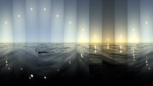

通用设置
在 Maya Arnold 插件的菜单栏下，Arnold->Lights，包括 Area Light（区域光）、Skydome Light（天穹灯光）、Mesh Light（几何体灯光）、Photometric Light（光度学灯光）、Light Portal（灯光引导口）、Physical Sky（物理天空）。
无论是 Arnold 灯光还是 Maya 内置灯光，都有一些通用的属性，以下部分资料参考了 Arnold 的官方技术文档和图片范例。
属性编辑器

Use Color Temperature（使用色温）
- 默认关闭。在灯光的 Arnold 卷展栏下，勾选 Use Color Temperature ，将启用标准的灯光照明计算，通过色温（单位：开尔文，符号 K ）来定义灯光的冷暖程度[1]。开启后将忽略用户自定义的灯光颜色，包括连接到 Color 通道的纹理贴图。


Exposure（曝光）
- 曝光是一个 F 制光圈值，用于将强度乘以 2 的 F 制光圈次幂。将曝光增加 1 可导致灯光量加倍。
在 Arnold 中，灯光的总强度通过以下公式进行计算：颜色 * 强度 * 2曝光
Samples（采样数）
- 使用灯光照明时，镜面反射的高光和软阴影的区域会产生噪波（尤其是使用天穹光照明时），可以增大采样值来减少噪波改善画面。灯光采样值会和 Arnold 渲染设置的 AA 采样数相乘，得到实际使用的阴影光线数。如果值为 0 ，灯光将会被禁用。采样数越多，渲染时间会越长，通常使用灯光采样 3-5 的数值即可解决直接照明的噪波问题。
Normalize（规格化）
- 默认启用。启用后，灯光量保持恒定，具有面积的灯光（如 Area Light 和 Mesh Light ）增大尺寸时，照明范围变广，而单位面积的照明强度会降低，阴影会减弱变柔和。如果关闭，灯光的照明强度和表面积成正比。
Cast Shadows（投射阴影）
- 默认启用。启用后灯光照射物体才能产生阴影。
Shadow Density（阴影密度）
- 值为 0 不会产生阴影，值为 1 产生不透明的黑色阴影，0 至 1 之间是具有透明度的阴影。


- 值为 0 不会产生阴影，值为 1 产生不透明的黑色阴影，0 至 1 之间是具有透明度的阴影。
Shadow Color（阴影颜色）
- 设置阴影的颜色，通常为黑色。表现艺术氛围时，也会根据光源的色温进行反相调节。


- 设置阴影的颜色，通常为黑色。表现艺术氛围时，也会根据光源的色温进行反相调节。


Cast Volumetric Shadows（投射体积阴影）
启用后会计算体积阴影效果，例如浓雾中的光束阴影。


Volume Samples（体积采样数）
- 体积采样数参数控制从直接灯光求内散射积分时使用的采样数。与曲面的“采样数”(samples)参数一样，它也是一个平方数。


Visibility（可见性）
- Diffuse（漫反射）、Specular（镜面反射）、SSS（次表面散射）、Volume（体积）都建议保持数值1，以保证真实的物理效果。
- Sky Dome Light 会多出两个特殊的参数：Camera（摄像机）和 Transmission（透射）。
- Camera 数值 1 是将灯光 Color 通道的贴图作为背景渲染可见，设置为 0 将得到透明的背景。这在我们仅需要 HDR 贴图作为光照信息并分离背景时会很有用。
Transmission 应保持数值 1，它是天穹光穿过透明物体的能力，低于 1 将得不到正确的物理结果。
Indirect（间接）
- 每次反弹的相对能量损失（或增益）。该选项值应保留为默认值 1.0，以生成在物理上有意义的结果。值大于 1 时，GI 算法将无法收敛到稳定的解。
Max Bounces（最大反弹次数）
- 允许来自此灯光的能量在场景中反弹的最大次数。“最大反弹次数”(Max Bounces)值为 0 意味着灯光只是直接照明计算的一部分，实际上会禁用此灯光的 GI。请注意，此值会与全局光线深度控件一同发挥作用，因此每灯光 999 次反弹这一默认值只是理论上的最大值；在实践中，全局光线深度限制的设置要小得多。
Area Light（区域光）
常用于模拟室内照明。它有三种形状：Quad（矩形）、Cylinder（圆柱）、Disk（圆盘），可在 Light Shape 下拉菜单中选择。Quad 常用于模拟面片光源，例如显示器、透过窗外到达室内的光线；Cylinder 用于模拟圆柱体光源，例如灯管、激光；Disk 用于模拟圆盘状光源，例如月亮、圆形顶灯。其中，Quad 形状的区域光参数最丰富，可以设定灯光的 Spread（扩散）、Resolution（分辨率）、Roundness（圆度）、Soft Edge（软边）。


属性编辑器

Spread（扩散）
- 发射沿法线方向聚焦的灯光。默认的扩散值为 1，会提供漫反射自发光，而值越低，灯光会越聚焦，直到几乎变成一束激光（此时值为 0）。当前不支持完全聚焦的激光束（值为 0），始终有一个非零的最小扩散。相比默认的高扩散值，扩散值越低，产生的噪波可能会越多，因此请谨慎使用低值。


Roundness（圆度）
- 更改灯光的形状，从 0 时的方形到圆角再到 1 时的圆盘。


Soft Edge（软边）
- 默认值为 0 ，灯光边缘无衰减。数值增大，灯光边缘出现衰减模糊；值为 1 时，灯光边缘将达到最大的衰减。


Skydome Light（天穹灯光）
常用于模拟室外照明。在介绍天穹光之前，先来了解两个概念：IBL 和 HDRI 。
IBL(Image-based lighting)：基于贴图的照明技术。通过专用相机，将真实世界的光照信息全方位的捕捉并存储到图像中，然后将图像应用于三维场景的环境照明。
HDRI(High Dynamic Range Imaging)：高动态范围成像。使用高动态范围摄影技术，再现超过标准动态范围亮度的数字成像技术。通俗的说，就是用计算机渲染或者 HDR 相机拍摄得到高于标准亮度的图片，便于后期图形细节的调节。
【一句话阐述 IBL 和 HDRI 的关系】
- 使用 HDRI 技术得到 HDR 图片，然后通过 IBL 技术，将 HDR 图片（后缀可以是 .hdr 或者 .exr ）作为三维场景的环境照明参考。
属性编辑器

Resolution（分辨率）
- 默认值为 1000 。同 Area Light ，分辨率必须设置为与 HDRI 图像的分辨率相匹配，但是在许多情况下，也可以设置为较低的分辨率而在反射中不会有明显的细节损失。参数越高，skydome_light 预先计算灯光的重要性表所需的时间就越长，这会增加场景启动时间。
Portal Mode（入口模式）
- 默认 interior_only 。off ，关闭入口；interior_only ，阻挡入口外的灯光；interior_exterior ，允许入口外的灯光通过。
- 如果场景中没有使用 Light Portal（灯光引导口），这个参数不起作用。
- 使用 Light Portal 时， Portal Mode 要设置为 Interior_exterior 才能得到全部的灯光效果。值得一提，设置为 interior_only 会加快渲染速度，尽管它会失去一些小缝隙处的光线引入，但画面表现效果有时会好于 Interior_exterior 模式。
Format（格式）
- 默认 Lat-long 。有四种方式：Lat-long（经度-纬度）、 Mirrored Ball（镜像球）、 Angular（角度）。 Lat-long 是最常用的，匹配多数 HDR 贴图的布局方式。
Mesh Light（几何体灯光）
在传统灯光形状无法满足要求的一些情况下，几何体灯光会更合适。几何体灯光可用于创建其他照明方式无法实现的有趣照明效果。例如，霓虹灯照明或车灯运动轨迹效果都可以通过几何体灯光轻松实现。
当前使用几何体灯光的限制包括：- 几何体灯光会忽略多边形对象上的平滑处理。
- NURBS 曲面当前无法与几何体灯光结合使用。
In Mesh（输入网格）
- 显示用作几何体灯光的形状名称。
Show Original Mesh（显示原始网格）
- 显示并渲染选择用于表示几何体灯光的原始网格形状。
Light Visible（灯光可见）
- 使光源对摄影机可见。
Photometric Light（光度学灯光）
光度学灯光使用的是从真实世界灯光测量得到的数据，通常直接来自灯泡和灯罩制造商。您可以导入来自 Erco、Lamp、Osram 和 Philips 等公司的 IES 数据图；这些 IES 文件提供给定灯光模型的精确强度和扩散数据。
Light Portal（灯光引导口）
需要场景中存在 Skydome Light 才能使用，作用是将室外光线引导到室内进行照明。Skydome Light 针对开阔的室外场景进行了照明的优化，但对于光线穿透建筑物门窗进行的室内照明存在不足，会产生大量噪波。因此需要 Light Portal 对特定区域进行 Skydome Light 光线的引导。
Physical Sky（物理天空）
用于模拟真实的天空照明，可设定太阳的位置、尺寸和照明强度。事实上 Physical Sky 就是在 Color 通道连接上物理天空纹理节点（ aiPhysicalSky ）的 Skydome Light 。物理天空通常用于构建简单的大气照明环境，快速展示场景效果。
属性编辑器

Turbidity（浑浊度）
浑浊度确定空气中的总体气溶胶含量（灰尘、湿气、冰、雾）。可以使用它轻松定义天空外观，而且它会影响太阳和天空的颜色。
浑浊度值范围为 1 到 10：
2：产生类似于北极地区非常晴朗的天空。
3（默认值）：温和气候下的晴朗天空。
6：温暖、潮湿天气下的天空。
10：稍微有点雾蒙蒙的天空。


Ground Albedo（地面反照率）
- 从地球表面反射回大气的灯光量。这是一个介于 0 和 1 之间的 RGB 值，其中 0 0 0 对应于黑色地面，而 1 1 1 对应于白色地面。请注意，这是一个细微的效果（在下图顶部边角较为明显）。


Elevation（高程）
- 太阳东升西落效果，太阳与可观测到的地平线之间的角度。范围介于 0 到 180 度（90 到 180 度是 0 到 90 度的镜像反射）之间。

Azimuth（方位角）
- 太阳绕地平线的角度。从北方开始度量，并朝东方逐渐增加（0 到 360 度）。
Sky Tint（天空染色）
- 允许设置一种颜色对天空颜色进行染色。天空染色应该用于精细的着色。例如，让天空具有稍微深一点的蓝色。


Sun Tint（太阳染色）
- 允许设置一种颜色对太阳颜色进行染色。这是用于小幅度细微着色调整的 RGB 倍增。大幅度着色调整将产生物理上不准确的结果，并会导致太阳与天空颜色不一致（除非两种染色完全相同）。


Sun Size（太阳大小）
- 设置可见太阳圆盘的大小。可以出于“美感”方面的考虑更改太阳大小。但是，0.51 是从地面观测时太阳的立体角（度）。增加此值会增加太阳的面积大小，进而产生更加柔和的阴影。
Enable Sun（启用太阳）
- 启用/禁用太阳可见性的切换开关。
Light Filters（灯光过滤器）
Arnold 灯光过滤器属于任意着色器，它们可以基于距离、位置或其他因素修改灯光输出。因此，使用此类过滤器可以轻松地为内置光源增添附加效果。
属性编辑器

Gobo
- Gobo 过滤器只能与聚光灯结合使用。在剧院舞台照明下，gobo（也称为“cookie”，即 Cucoloris 的行业叫法）是一个带孔的金属薄片，用来将光束分成更自然的不规则图案（例如树叶等）。在计算机图形领域，gobo 有时指代“滑动投影仪”（有时也称为“投影灯”，但请注意，在 Arnold 中，gobo 不是光源本身，而是应用于聚光灯光源的过滤器）。任何纹理贴图或程序着色器都可通过灯光投影。


属性编辑器

Filter Mode（过滤器模式）
- 用于将 gobo 滑动贴图与灯光输出结合起来的混合方程式。“混合”(Blend)会创建默认 gobo 效果。“替换”(Replace)会在聚光灯基础上倍增滑动贴图。“相加”(Add)会在 gobo 基础上倍增聚光灯。“相减”(Sub)会反转滑动贴图的 RGB 值。“融合”(Mix)会在聚光灯和滑动贴图之间对结果进行均匀地平均处理。


- 用于将 gobo 滑动贴图与灯光输出结合起来的混合方程式。“混合”(Blend)会创建默认 gobo 效果。“替换”(Replace)会在聚光灯基础上倍增滑动贴图。“相加”(Add)会在 gobo 基础上倍增聚光灯。“相减”(Sub)会反转滑动贴图的 RGB 值。“融合”(Mix)会在聚光灯和滑动贴图之间对结果进行均匀地平均处理。
Slide Map（滑动贴图）
- 用来创建 gobo 效果的纹理贴图。


- 用来创建 gobo 效果的纹理贴图。
Density（密度）
- 控制 gobo 的密度。值越高，gobo 越不透明，通过的灯光也越少。


- 控制 gobo 的密度。值越高，gobo 越不透明，通过的灯光也越少。
Offset（偏移）
- 用来偏移滑动贴图方向的 UV 坐标值。


- 用来偏移滑动贴图方向的 UV 坐标值。
Scale S（横向比例）
- 在 S 方向缩放用于滑动贴图的纹理。
Scale T（纵向比例）
- 在 T 方向缩放用于滑动贴图的纹理。
Wrap S（横向包裹）
- 控制 2D 纹理贴图如何在曲面的 S 方向上重复。
Wrap T（纵向包裹）
- 控制 2D 纹理贴图如何在曲面的 T 方向上重复。


Barndoor（挡光板）
- 此灯光过滤器只能与聚光灯结合使用。此挡光板过滤器引入了四个挡光板翻板[2]。每个挡光板翻板都有三个参数。前两个参数控制翻板两端在灯光面的位置。第三个参数（“边”(Edge)）控制边的柔和度。相关位置指的是距相应边的距离。边柔和度是一种渐变宽度。渐变从挡光板边上的 1（全开）开始，并根据边宽度在聚光灯周长方向逐渐减小为 0。
- 例如，坐标为“0.25, 0.25”且边为 0.125 的翻板将在 0.25 处恰好“打开”，并在 0.375 处恰好“关闭”。边效果从挡光板边缘开始，并一直朝外（而不是朝内）延伸。


属性编辑器

Light Blocker（挡光对象）
- 挡光对象是一种灯光过滤器，用来指定“几何体类型”(Geometry Type)（长方体、球体、圆柱体或平面）中定义的基本体体积，在连接到灯光节点后将阻挡或修改穿过该体积的灯光[3]。与其他过滤器一样，挡光对象只影响它连接到的灯光（即该几何体不会影响任何其他灯光，包括 GI，而且它是不可见的）。
- 一个简单的用途是模拟复杂灯外壳的效果（可能需要与挡光板过滤器结合使用），而无需对灯几何体进行建模。
- 另一个用途是在场景中创建看起来与平常不同的阴影。
属性编辑器

Geometry Type（几何体类型）
- 确定被遮挡灯光的形状。挡光对象可以是长方体、圆柱体、球体或平面。


- 确定被遮挡灯光的形状。挡光对象可以是长方体、圆柱体、球体或平面。
Density（密度）
- 此值是挡光对象效果的强度。只有密度值大于 0，挡光对象才会产生效果。


- 此值是挡光对象效果的强度。只有密度值大于 0，挡光对象才会产生效果。
Shader（着色器）
- 在此插入要用作遮罩效果的着色器的输出。
- 例如，用于表示某些树叶的阴影的纹理贴图。不同于 gobo，您可以不受灯光变换的影响调整阴影位置。
- 它适用于所有类型的灯光，而不是只适用于聚光灯（不同于 gobo，gobo 也会为场景贡献照明）。
- 它仅在“几何体类型”(Geometry Type)设置为“长方体”(Box)时起作用。


Axis（轴）
- 基于设置的方向衰减渐变。


- 基于设置的方向衰减渐变。
Ramp（渐变）
- 这是渐变倍增的幅值，沿渐变轴方向应用。负值会翻转渐变轴方向。


- 这是渐变倍增的幅值，沿渐变轴方向应用。负值会翻转渐变轴方向。
Height Edge（高度边）
- 衰减挡光对象高度的边。


- 衰减挡光对象高度的边。
Width Edge（宽度边）
- 衰减挡光对象宽度的边。


- 衰减挡光对象宽度的边。
Roundness（圆度）
- 改善平面挡光对象的圆形形状。


- 改善平面挡光对象的圆形形状。


Light Decay（灯光衰退）
- 该过滤器可以添加到所有 Arnold 灯光。可以在该过滤器中指定衰减范围。默认情况下，Arnold 中的所有灯光都使用基于物理的衰减，但灯光衰退过滤器可出于美观目的调整衰减。
属性编辑器


- 1.理想的黑体辐射器的温度，以开尔文为单位，用于确定光源的颜色。默认颜色设置为 6500 K，国际照明委员会 (CIE) 将此视为白点。颜色范围从红色到白色再到蓝色。值大于 6500 K 时颜色为冷色，而小于 6500 K 的颜色为暖色。 ↩
- 2.挡光板是连接到灯光开口侧面的不透明可移动面板。它们通常在剧院和电影照明场景下使用，用于对光束形状进行进一步的控制。 ↩
- 3.挡光对象可为照明 TD 提供很好的灵活性。 它们用来以人工方式遮罩场景中的灯光，而不会产生添加额外几何体所需的开销。如果使用得当，它们可提供一定的艺术自由度，便于以非物理方式定义灯光边界。 ↩
- 4.参考：Arnold for Maya 用户手册：灯光 ↩